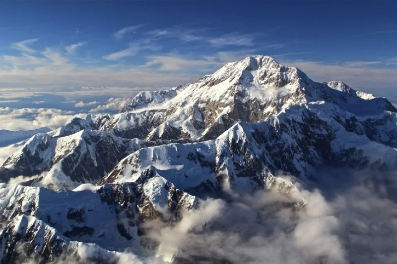

Denali
Alasca, Estados Unidos · 6.190 m
O ponto mais alto da América do Norte, cercado por geleiras e paisagens geladas no Alasca.
O que fazer: passeios de ônibus pelo parque, observação da vida selvagem e trilhas para apreciar a paisagem.